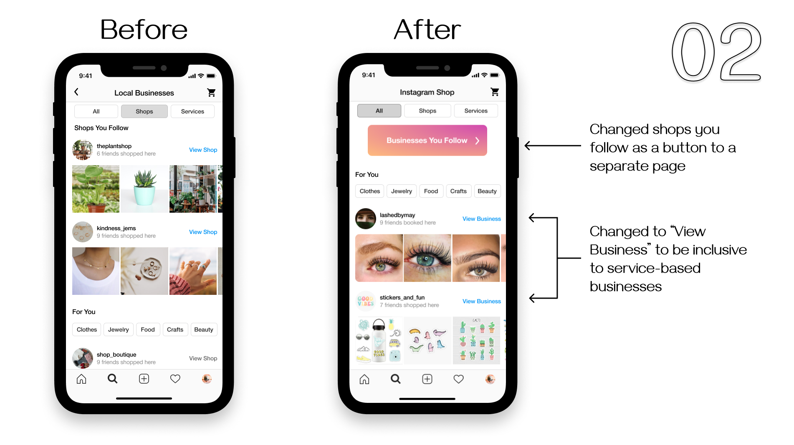
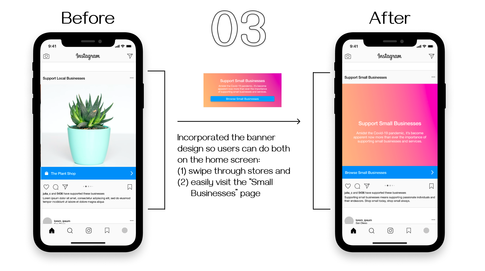

INSTAGRAM SHOP SMALL
Fall 2020 (10 weeks)
UX Researcher / Designer
User Research
Prototyping
A/B Testing
Overview
For our COGS 127 HCI class, my team and I chose to explore finding ways to sustain businesses during the pandemic. We decided to focus on Instagram, a multifaceted platform with over 1 billion users worldwide.
Problem
The COVID-19 pandemic has impacted businesses nationally; and small businesses have taken the biggest hit. As Instagram grows with its marketing potential, it has expanded its features to be used for online shopping.
How might we further extend Instagram’s Shop feature to increase the discoverability of small businesses and local services?
Research Methods
Our main research goals are to see how users shop or discover businesses on Instagram. We are interested in how we could improve the Instagram shopping or business discovery experience. While our aim is to help business owners, our target audience are the average Instagram users. To gain more insight, we plan to use several methods of research such as surveys, interviews, and direct observation.
We created two surveys: asking questions about the customers’ experiences involving shopping online and how do they find local or small businesses to support and asking business owners to gauge how they use Instagram to promote their business and what they want to see more from Instagram Shop.
To further this research, we also interviewed select business owners to build upon their goals. We reached out to these business owners via Instagram.
User survey
(15 responses)
Small business survey
(3 responses)
Small business interview
(5 responses)
Next, we tested out the app’s features ourselves as well as directly observed users navigating through the app with a list of goals for them to accomplish (i.e. finding a local restaurant’s account, booking an appointment, etc). For social distancing purposes, we asked participants to screen record their phones.
Research Insight
Pain points
- The Shop feature is mainly intended for larger businesses as it is not very customizable and the process of setting up is difficult, especially without a website.
- To maintain a following and keep engagement, small businesses owners must constantly post content and interact with followers, which is very time consuming.
- Even then, small business pages receive lot less engagement than expected.
- There are not a lot of opportunities for service-oriented businesses on Instagram to gain exposure. For example, the Instagram Shop feature only feature products, mostly of larger businesses.
- According to the Instagram business owner survey, it’s difficult to create an Instagram Business Account.
Wishes and Desires
- More customizable features
- Better organization for DMs (commissions, clients, etc).
- To build a long-term relationship with followers.
Unexpected Behaviors
One business owner had to pay a page to promote their brandStories and reels get more exposure than posts.
Competitive Audit
User Personas


User Testing
In prototype A, the user will access small businesses through a small banner that appears in their feed when scrolling through their feed. This is meant to be noninvasive to the user’s experience as we have received feedback that some users might not like if oriented too much on commerce on Instagram. Prototype A also uses a grid system when listing products/services at a shop. This is to direct attention to the photo as Instagram is a photo-based app. The grid system also allows users to view more products at once and allows users to scroll through the listings quicker.
In prototype B, the user will access small business through a post on their feed. The post will feature multiple small businesses and users can choose to view the business’s listings straight from the view. This is meant to be more engaging for the user, but a limitation to his is that users will not be able to view all small businesses; they only see the ones that are on the post. This is also a little more invasive to the users as the post takes up the space of a whole post. Prototype B uses a list system when listing products/services of the business. This allows users to see a description along with the photo of the listing, which gives the user more information. A limitation to this is that it takes longer to scroll through as the descriptions take longer to take in than pictures.
Results
With our two low fidelity prototypes we conducted A/B testing to gain insight on how to lay out a “Support Local Businesses” banner on the homepage, how to display listings from a business (i.e. grid vs. list format), and how to display that a user’s message to a business has been sent. Based on our user test, we noticed that the current messaging system on Instagram is not intuitive. Users struggled with the flow of clicking on the “share” button when given the task to message a business. In relation to the “Support local businesses” banner on the Instagram Home page, we found that ⅔ of our users preferred a less intrusive and more informative way of displaying business related information (i.e. Small info banner instead of big banner with a carousel of businesses and images). Specifically, one user preferred the small info banner as it led them to the Instagram Shop landing page that featured a variety of local businesses – whereas, the carousel of images and businesses was more limiting because it only directed the user to the businesses being shown.
For our A/B test on how to display a business’ listings (i.e. grid vs. list format) ⅔ of our users preferred the list format. With this format, the user would be able to see an image, as well as a short description that provides context for the product or service. We plan to keep this insight in mind when developing our mid-fidelity prototypes.
For our A/B test on how to display a confirmation that a user’s message to a business has been sent, only 1 of our 3 users noted that they preferred one design over the other. Specifically, they preferred the confirmation pop-up that had the paper airplane icon over the one that only had text.
Final Prototype
Explore Page Changes
We chose to iterate upon our explore page. In Prototypes A and B, we had an image of a featured store – in this case, The Plant Shop – which would catch user’s attention and provide users an entry point into Instagram Shop. One issue with this, however, was that it almost meshed too well with the other images within the explore page. The “Browse Small Businesses” text was not very discoverable, which posed an issue for how effective this design would be. To alleviate this, we opted to incorporate a similar ombre-effect graphic – similar to the banner-style post within the home page of Prototype A. With this, it would capture the user’s attention while still giving them the entry point of accessing Instagram Shop.
Explore Instagram Shop
Another improvement we made in our final prototype design was listening to our user's preference for our services and shops landing page in Prototype B. In Prototype B, we laid out the shop and services by incorporating a “For You” section with featured shops and services specific to the user, how many of their friends/accounts they follow went/shopped at those small businesses, as well as an option to easily view the shops and services they follow. In our final prototype, we moved the For You section up to be at the forefront of the landing pages, with an ombre button that allows users to view the shops and services they follow.
Promoting businesses
Another improvement we made in our final prototype design was listening to our user's preference for our services and shops landing page in Prototype B. In Prototype B, we laid out the shop and services by incorporating a “For You” section with featured shops and services specific to the user, how many of their friends/accounts they follow went/shopped at those small businesses, as well as an option to easily view the shops and services they follow. In our final prototype, we moved the For You section up to be at the forefront of the landing pages, with an ombre button that allows users to view the shops and services they follow.
Final Interactive Prototype
Reflection
This project helped me grow as a designer through user research, creating graphics and prototyping with Figma, and communicating design choices. I was able to story-tell through personas and work closely with target users. Though this was a class project and unrelated to Instagram as a company, I enjoyed being empathetic with small business owners and everyday social media users.
I would like to thank Professor Guo and Instructional Assistant Nhu Luong for their guidance through this project. I would also like to thank my teammates Nicolette Shin and Julia Chu for doing such good work in our collaboration as well as being so fun to work with!